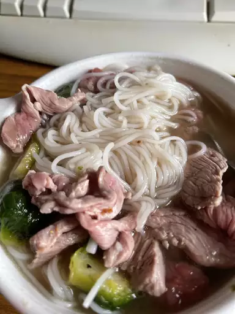

Pho

Description
Ingredients
- 1 (8oz) package dried rice noodles
Steps
- Gather all Ingredients
- Preheat
- Preheat oven to 425 degrees
- Roast beef bones and onion
-
Transfer beef bones and onion to pot. Bring to boil, then let simmer.
- Cook rice noodles; enjoy!
Return to Home Page